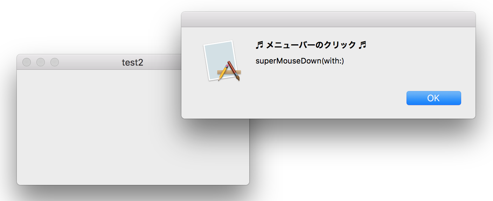

メニューバー上のマウスイベントを取得する

画像をクリックすると動画になります。
実装方法
メニューバーを含んだウィンドウに相当するビューのオブジェクトは、次のように求めることができる。ここからコンテントビューを除いたの部分がメニューバーの領域となる。
このオブジェクトのクラスは、言語仕様上公開されていないようだが、NSThemeFrame という NSWindow と NSView の間にあるものらしい。ここにもmouseDownメソッドが定義されているようなので、サブクラスを作成しオーバーライドすれば良さそうだが、そのようなことはできない。そこで次のような方法をとる。
メニューバーをクリックしたとき、NSThemeFrameクラスの mouseDownメソッドが起動しているはずだが、そこには処理の記述がない。そこで、どこかしらに、実行したい処理を記述した新しい mouseDownメソッドを作成し、それを上記のメソッドと入れ替える。そうするとメニューバーをクリックしたときこのユーザ定義のメソッドが起動するようになる。
swizzling というテクニックらしい。全てこちらのおかげです。
なお、ウィンドウのコンテントビューと、このNSThemeFrameの領域は、ファーストレスポンダとしての上下関係にはないようで、コンテントビューのmouseDownメソッドからsuperのメソッドを呼んでも、このメソッドが呼ばれることはない。
コンテントビューのサブクラス
この方法をとるとアプリケーション内の全てのウィンドウに適用されるので、NSAlertパネルのメニューバーをクリックしても起動する。ウィンドウごとに処理を分けるにはウィンドウのタイトルで判定したりすること。